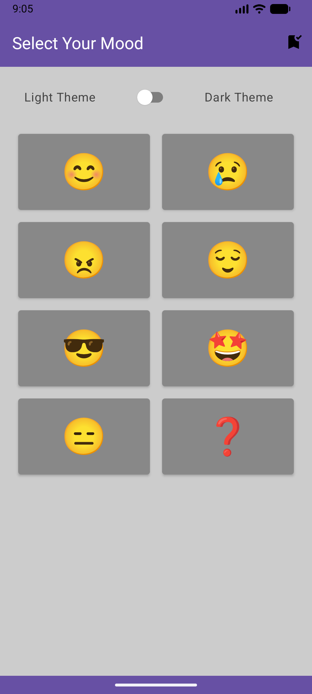
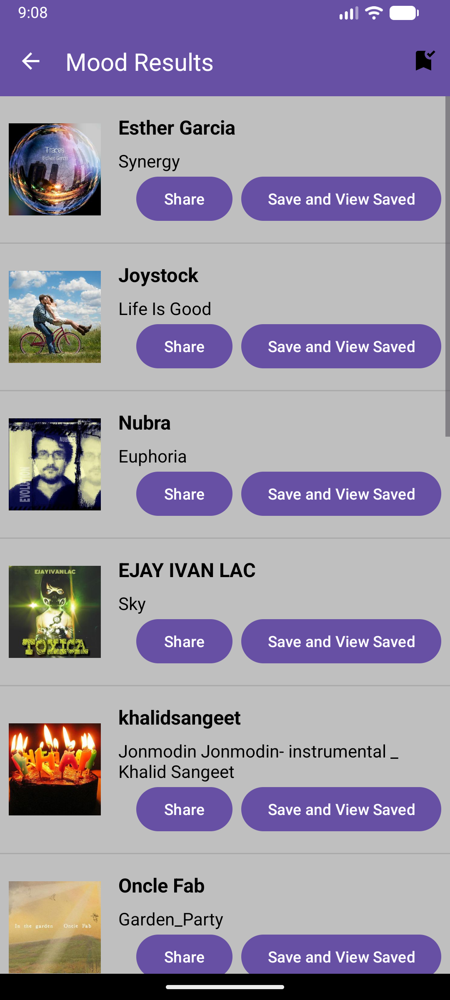
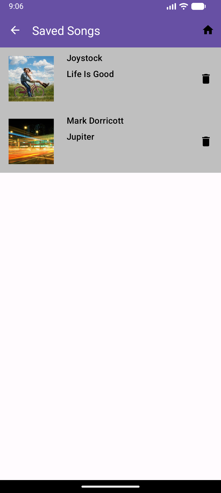

Mood Tunes is an Android music discovery app built with Kotlin and Gradle Kotlin DSL. The app fetches music tracks from the Jamendo API using Retrofit and Moshi, displays results in a RecyclerView-based interface, and allows users to save songs locally using Room. The project follows an MVVM-like structure with a repository layer that handles networking, local persistence, and time-based caching through Kotlin Coroutines.

Select your mood!

Personalized song recommendations

List of Saved Songs
Users can browse music fetched from the Jamendo API, view track information, load song artwork with Glide, and save favorite songs locally. Saved songs are stored in a Room database and displayed in a separate saved songs screen.
The app uses an MVVM-like architecture where the UI communicates with MusicViewModel, which calls MusicRepository. The repository manages API requests through Retrofit, parses responses with Moshi, caches results using Kotlin Coroutines and Kotlin Time, and stores saved songs locally with Room.